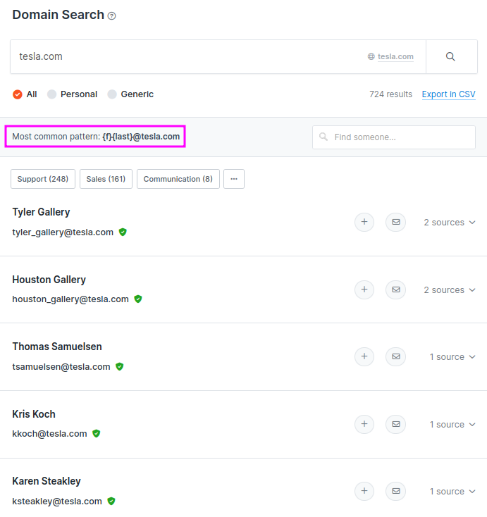
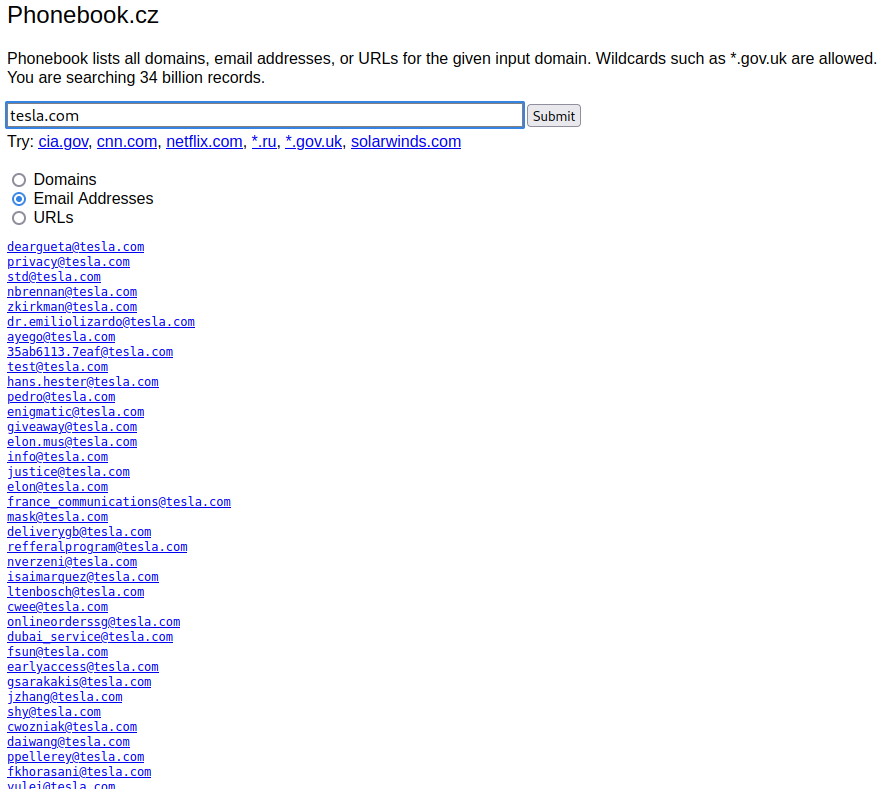
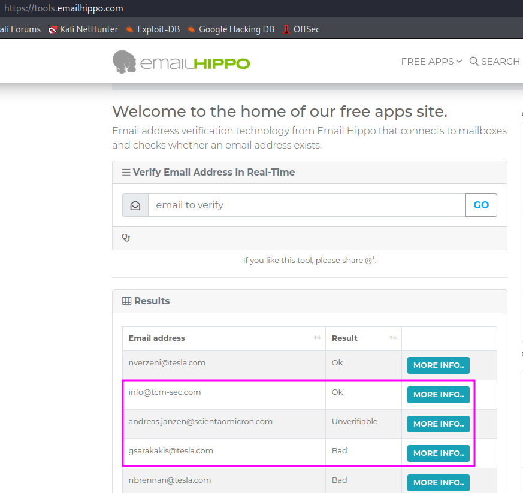
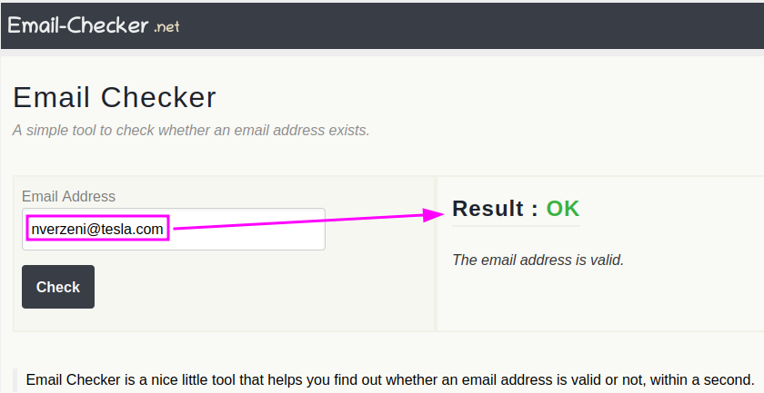

Discovering Email Adresses
In this part, it will be demonstrated how one can find and verify email addresses as a part of reconnaissance on a target.
Finding email addresses is not only helpful for hacking, but also for lead generation in sales. Sometimes a simple Google search will already help to find the desired email address, but sometimes one has to dig deeper. There are a couple of tools that can be used to find and verify email addresses:
hunter.io
With the free account, one can run 25 searches per month for email addresses for a specific host name, e.g. tesla.com. One has to register on their website and even provide a mobile phone number for 2-factor authentication.
On the hunter.io website, one just has to enter the host name in the search field and gets a summary of some search results as shown in the screenshot below. Since the number of email addresses that one actually gets access to is rather limited, the most valuable information is probably the pattern that hunter.io deduces from the found email addresses. In the case of Tesla this is an email pattern of {f}{last}@tesla.com which means the first letter of the first name followed by the full last name, e.g. emusk@tesla.com.
phonebook.cz
This website also allows not only to search for email addresses, but also domains and URLs. The presentation may not be as nice as hunter.io, but it does not require any registration and one gets access to a lot more email addresses, at least compared to the free account on hunter.io. One might often just find the pattern how the email addresses are composed by just scanning over the results. This list can be used in conjunction with the pattern presented by hunter.io, but the email addresses can also be used directly for several sorts of attacks, e.g. passwort stuffing or password spraying. One just has to copy the email addresses from the website into a local file.
Another similar website to hunter.io and phonebook.cz is voilanorbert.
There is also a Chrome extension for gmail.com called Clearbit Connect that can be used to search for email addresses. Clearbit seems to be very powerful, but the disadvantage is that you need to have a gmail account and you need to log in to gmail.
TCM (Heath Adams) typically uses the following sources when he hunts something down:
- Google (e.g. search for the name of a person that holds a specific role in a target company)
- phonebook.cz or hunter.io to find the email address structure in the target organization
- Finally, the email can be verified with help of the following websites
email hippo
This webpage does not require any registration. You just enter an email address and get feedback whether the email address is valid or not (…or unverifiable). According to TCM, the website occasionally produces false positives and false negatives.
email-checker
Similar to email hippo, this service can be used to verify email addresses without actually interacting with the target. There is even an API that can be used to automate the service. For bulk email verification one has to sign up for a paid premium account.
Interestingly, email-checker verified an email as “Ok” that was assessed as “Bad” by email hippo. I should probably look into these tools a bit more thoroughly to find out how reliable they are, compared to one another.
The email addresses that have been found and verified can be checked for leaked login credentials in the next step, e.g. using haveibeenpwned.
Forgotten passwords
The password reset function of websites must not be underestimated! It can provide clues to tie one email address to another that has been stored on a website for password recovery. First of all, though, the recovery function will tell you if an account ID is valid or not, because you will receive an error message if you try to log in with a non-existing ID.